{]Ir-Xn-bpsS hc-Zm\w
"temI-Ønse G‰hpw kº-∂-amb cmjv{Sw' ˛ ]k-^nIv kap-{Z-Øn¬ ÿnXn
sNøp∂, shdpw 21 NXp-c-{i-In-tem-ao-‰¿ am{Xw hnkvXr-Xn-bp≈ \udp (Nauru)
F∂ Zzo]ns\ hniz-hn-JymX amknI "\mj-W¬ tPym{K-^nIv' 1976˛¬ hnti-
jn-∏n-®Xn-ß-s\-bm-Wv. \ndsb ]®-∏p≈ Cu Zzo]v Hcn-°¬ \nc-h[n tZim-
S-\-∏-£n-I-fpsS A`-b-tI-{μ-am-bn-cp∂p. F∂m¬ C∂v \udp Hcp Xcn-ip`q-
an-bm-Wv. Zzo]nse hn`-h-ß-sf√mw XpS®p\o°-s∏-´p. Fßpw ]hn-g-∏p-‰p-Iƒ
am{Xw Fgp∂p\n¬°p∂ hnP-\-`q-an... F¥p-sIm≠v \udp Cß-s\-bmbn
F∂-dn-tbt≠? cmk-h-f-\n¿am-W-Øn\v D]-tbm-Kn-°p∂ t^mkvt^‰v F∂
[mXp-hn-`-h-Øm¬ kº-∂-am-bn-cp∂p \udp. 1888˛¬ P¿a\n AhnsS tImf\n
ÿm]n®v t^mkvt^‰v J\\w XpS-ßn-b-tXmsS Zzo]ns‚ Zpchÿ XpS-ßn.
H∂mw temIbp≤m-\-¥cw {_n´≥, Bkvt{S-en-b, \yqkn-e‚ v F∂o cmPy-
ßfpw AhnsS J\\w Bcw-`n-®p. t^mkvt^‰v J\-\-Øn-eqsS \udp Hcp
kº-∂- cmPyambn amdn-bn-cp∂p. F∂m¬ Aan-X-amb t^mkvt^‰v J\\w
Ahn-SsØ kkym-h-cWw C√m-Xm°n.AtXmsS ]£n-Ifpw P¥p-°-fp-
sams° \mam-h-ti-j-ambn. \udp-hns‚ ]cn-ÿnXn Xs∂ amdn. t^mkvt^‰v
\nt£-]hpw A[nIw Xma-kn-bmsX Xo¿∂p. Aßs\ \udp Hcp XnI™
Zcn-{Z-cm-Py-ambn... F√m A¿Y-Øn-epw...
Page 75
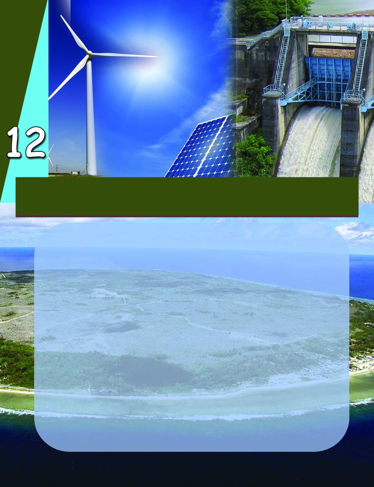
Page 76

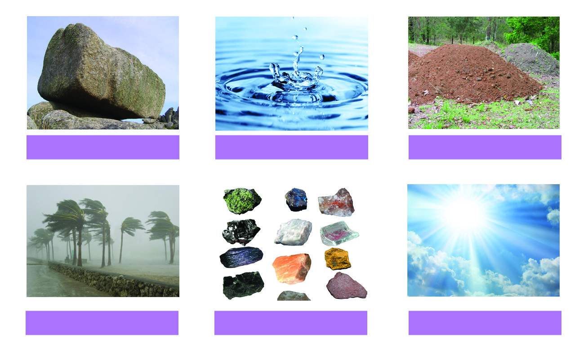
kmaq-ly-imkv{Xw
172
{]Ir-Xn-bpsS hc-Zm\w
t^mkvt^‰v F∂ [mXp-hn-`-h-Øm¬ Hcn-°¬ kº-∂-am-hp-Ibpw
]n∂oSv AtX [mXp-hn-`-h-Øns‚ timjWw aqew Zcn-{Z-amhpIbpw
sNbvX \udp F∂ cmPy-sØ-°p-dn®v hmbn-®t√m. \udp-hns‚
Ncn{Xw Adn™p Ign-™-t∏mƒ \nß-fpsS a\- n¬ NphsS
\¬In-b tNmZy-߃ DZn-®n´p≠mhp-at√m.
F¥m-Wv hn`-h-߃?
hn`-h-tim-jWw Fßs\ kw`-hn-°p-∂p?
hn`-h-߃ kwc-£n-°-s∏-tS-≠-Xpt≠m?
hn`-h-߃, hn`-h-tim-j-Ww, hn`hkwc-£Ww F∂n-h-sb-°p-
dn®v IqSp-X¬ Adn-bm≥ Cu bqWn‰v \nßsf klm-bn-°pw.
{]Ir-Xn-bn¬ ImWp-∂Xpw a\p-jy\v D]-tbm-K-{]Zamb hkvXp-
°sf hn`-h-߃ F∂p ]d-bp-∂p. {]Ir-Xn-bn¬\n∂v e`n-°p∂
Nne hn`-h-ß-fpsS Nn{X-ß-fm-Wv NphsS \¬In-bn-cn-°p-∂-Xv.
ine-Iƒ
Pew
aÆv
Im‰v
[mXp-°ƒ
kqcy-{]-Imiw
{]Ir-Xn-bn¬\n∂v t\cn´pe`n-°p-∂Xpw D]-tbm-KtbmKy-hp-amb
CØcw hn`-h-ß-fmWv {]Ir-Xn-hn-`-h-߃.
Page 77

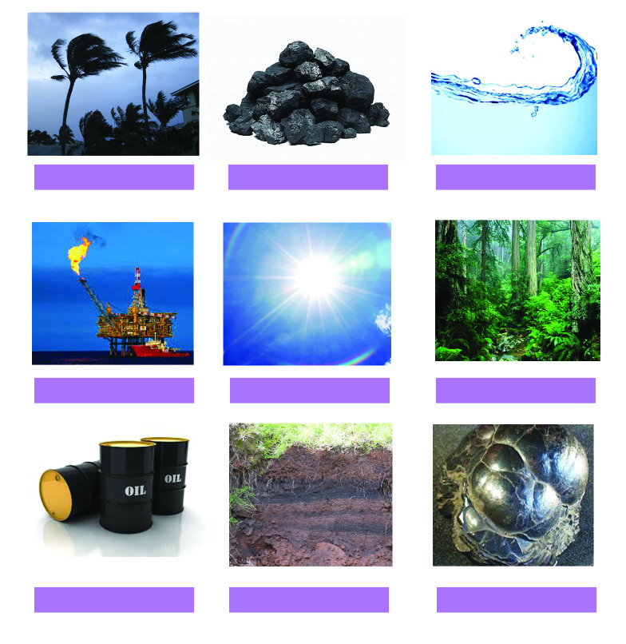

Ãm≥tU¿Uv VI
173
{]Ir-Xn-bpsS hc-Zm\w
hmbp, kqcy-{]-Im-iw, Im‰v, ac-߃, Pew F∂n-ßs\ FÆn-bm-
sem-Sp-ßmØ hn`-h-ßfm¬ kº-∂-amWv \ΩpsS {]IrXn.
{]IrXnhn`-h-߃°v IqSpX¬ DZm-l-c-W-߃ Is≠Øq Ah-bpsS
D]-tbm-K-߃ IqSn FgpXnt\m°q.
\n߃ Is≠-Ønb hn`-h-ß-fn¬ NneXv Poh-\p-≈-h-bmWv; a‰p
NneXv Poh-\n-√m-Ø-hbpw. Poh-\p≈ hn`-h-ßsf ssPh-hn-`-h-
ß-sf∂pw Poh-\n-√mØhsb AssPhhn`-h-ß-sf∂pw ]d-bpw.
`qan-bn¬ a\p-jy≥ D]-tbm-Kn-°p∂ {]IrXnhn`-h-ß-fn¬ NneXv
F°m-eØpw e`y-am-Wv. F∂m¬ a‰p Nne hn`-h-߃ D]-tbm-
Kn-°p-∂-Xn-\-\p-k-cn®v Xo¿∂p-t]m-Ip-∂-h-bmWv.
NphsS \¬In-bn-´p≈ hn`-h-ßsf F°m-eØpw e`y-am-bh
F∂pw D]-tbm-K-Øn-\-\p-k-cn®v Xo¿∂p-t]m-Ip-∂-h-sb∂pw Xcw-
Xn-cn®v ]´n-Ibn¬ (]´nI 12.1) Dƒs∏-Sp-Øp-I.
Im‰v
Pew
I¬°cn
Pew
{]Ir-Xn-hm-XIw
kqcy-{]-Imiw
h\w
s]t{Sm-fnbw
aÆv
Ccp-º-bncv
Page 78

kmaq-ly-imkv{Xw
174
{]Ir-Xn-bpsS hc-Zm\w
F°m-eØpw e`y-amb
hn`-h-߃
$
Im‰v
$
$
D]-tbm-K-Øn-\-\p-k-cn®v
Xo¿∂pt]mIp∂ hn`-h-߃
$
I¬°cn
$
$
]p\-ÿm-]n-°-s∏-Sp∂
hn`-h-߃
]p\-ÿm-]n-°-s∏-SmØ
hn`-h-߃
h¿[n-°p∂ Bh-i-y-߃; timjn-°p∂ hn`-h-߃
{]Ir-Xn-hn-`-h-ßsf a\p-jy≥ X\n-°p-th≠n am{X-ap≈sX∂
[mc-W-bn¬ btYjvSw D]-tbm-Kn-®p-sIm-≠n-cn-°p-∂p. P\-kw-Jym-
h¿[-\-hv, imkv{X˛kmt¶-XnI-]p-tcm-K-Xn, sa®-s∏´ hm¿Øm-hn-
\n-ab kuI-cy-߃, hyh-kmbh¬°-cWw F∂nh {]IrXnhn`-
h-ßfpsS Bh-iy-IX h¿[n-∏n-®p. CXv Aan-X-amb hn`htimj-
W-Øn\v hgnsXfn-®p. A\n-b-{¥n-X-amb D]-t`mKw aqew hn`h-
ß-fpsS Af-hn-epw KpWØnepap≠mIp∂ Ipd-hmWv hn`-h-tim-
j-Ww. {]Ir-Xnsb Aimkv{Xob-ambn NqjWw sNøp-∂-Xn\m¬
]e Aaq-ey-hn-`-h-ßfpw \jvS-am-hp-Ibpw {]Ir-Xn-bpsS X\-Xmb
kz`m-h-Øn¬ am‰w h∂p XpS-ßp-Ibpw sNbvXp.
]´nI 12.1
Page 79

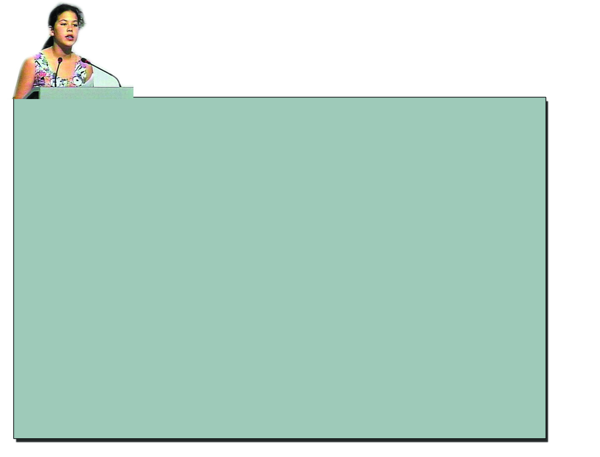
Ãm≥tU¿Uv VI
175
{]Ir-Xn-bpsS hc-Zm\w
Rm≥ F\n°pw Fs‚ `mhnXe-ap-dbv°pw th≠n t]mcm-Sp∂p. hni-°p∂ Hcm-bncw Ip™p-
߃°p th≠n... `qap-J-Øp-\n∂v A{]-Xy£ambn-s°m≠n-cn-°p∂ P¥pPm-e-߃°pth≠n Rm≥
kwkm-cn-°p-∂p. `qan-b-√msX Ah¿°v as‰m-cn-S-an√. Ah-cpsS i_vZw Bcpw tIƒ°p-∂n-√.
F\n°v izkn-°m≥ `b-am-Ip-∂p. F\n-°-dn-bn-√, F¥p-am{Xw hnj-en-]vX-amWo hmbp F∂v.....
Rm≥ ]pd-tØ-°n-d-ßm≥ `b-°p-∂p...-Im-cWw, A¥-co-£-Ønse Hmtkm¨ kpjn-c-߃... Fs‚
Ip™p-߃°pIqSn ImWm≥ \n߃ _m°nht®-°ptam Cu ag-°m-Sp-Isf, arK-ß-sf, ]qºm-
‰-I-sf...? \nß-fpsS _mey-Im-e-Øv \n߃ Cßs\ hne-]n-®n-cp-∂pthm? BIp-e-s∏-´n-cp∂p-thm...?
\n߃°n-\nbpw `qansb kwc-£n-°m≥ ka-b-ap-s≠∂v Icp-Xp-∂pthm?
\n߃°v km¬a¨ a’y-ßsf Xncn-sI-sb-Øn-°m≥ Ign-bns√¶n¬...
acp-`q-an-I-fmbn amdnb h\-{]-tZ-i-ßsf XncnsI sIm≠p-h-cm≥ Ign-bn√msb¶n¬...
\n¿Øq Zb-hm-bn... Chsb \in-∏n-°mXncn-°q.
1992 ¬ {_ko-ense dntbm- Un- P-\otdmbn¬ \S∂ sFIy-cm-
jv{S- kwLS\-bpsS BZy `ua D®tIm-Sn-bn¬ \nc-h[n
temIcmjv{S-ß-fpsS {]Xn-\n-[n-Iƒ ASßnb kZ- ns\ \n»-
_vZ-am-°nb {]kw-Kw samgn-am‰w \S-Øn-b-Xns‚ {]k-‡-`m-K-
ßfmWv apI-fn¬ hmbn-®-Xv. tIhew 12 hb pam{X-ap≈
sksh¨ Ipfnkv kpkpIn F∂ Im\-U-°m-cnbmb s]¨Ip-
´n-bm-bn-cp∂p {]kwKI.
Fs¥m-s°- BIp-e-X-I-fmWv B s]¨Ip´n Xs‚ {]kw-K-Øn-
eqsS ]d-bm≥ {ian-®-Xv?
aen-\o-I-cn-°-s∏-Sp∂ hmbp
\in-∏n°-s∏Sp∂ h\-߃
`qap-J-Øp-\n∂v A{]-Xy-£-am-Ip∂ P¥pPme߃
Page 80


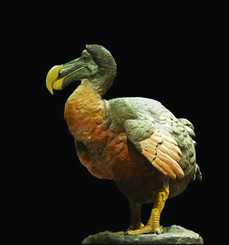
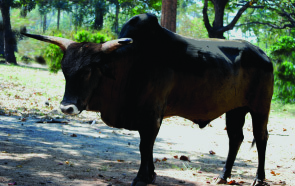
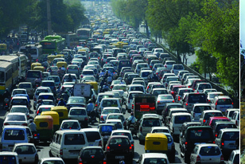
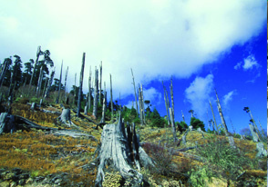
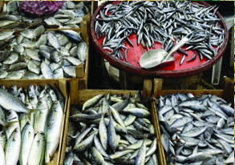


kmaq-ly-imkv{Xw
176
{]Ir-Xn-bpsS hc-Zm\w
a\p-jys‚ Aan-X-amb hn`-h-Nq-jWw aqew
hwi-\miw kw`-hn® Pohn-bmWv tUmtUm.
C¥y≥ alm-k-ap-{Z-Øn¬ audo-jykv Zzo]n¬
I≠ph-∂n-cp∂ Cu ]£n-Isf amwk-Øn-\p-
th≠n sIms∂mSp-°n-b-t∏mƒ `qapJØp \n∂v
Ah A{]-Xy-£-am-bn. C¥y-bn¬ D≠m-
bn-cp∂ Atdm®v F∂ I∂p-Im-en-h¿Kw,
Gjy≥ No‰∏pen F∂nhbpw A\yw\n∂p
t]mb-h-bm-Wv.
1972 PqWn¬ tÃm°v
tlman¬ \S∂ am\h
]cn-ÿn-Xn-sb-°p-dn®
sFI-y-cm-jv-{S- kw-L-S-
\-bpsS
ktΩ-f-
\Øn¬, C¥ybpsS
{][m-\-a{¥n {ioa-Xn
Cμn-cm-Km‘n \S-Ønb
{]kw-K-w sFI-y-cmjv{S
k`sb Pq¨ 5 temI
]cn-ÿnXnZn\-ambn BN-
cn-°m-\p≈ Xocp-am-\-
Øn-se-Øn®p.
\mw hn`-h-߃ A{i-≤-ambn D]-tbm-Kn-®m¬ `mhnbn¬
F¥mWv kw`-hn-°p-I? X∂n-cn-°p∂ Nn{X-߃ {i≤n-°q.
Nn{X-߃°v ASn-°p-dn∏v FgpXnt\m°q.
..............................................
h\-`q-an-Iƒ
Xcn-ip-`q-an-I-fmbn amdpw
..............................................
..............................................
Pew, aÆv, s]t{Sm-fnbw, h\w F∂o {]Ir-Xnhn`-h-߃ {]Ir-Xn-bn¬ \n∂p
A{]-Xy-£-am-bm¬ F¥p kw`-hn°pw? N¿®sNøq
1
2
3
4
Page 81


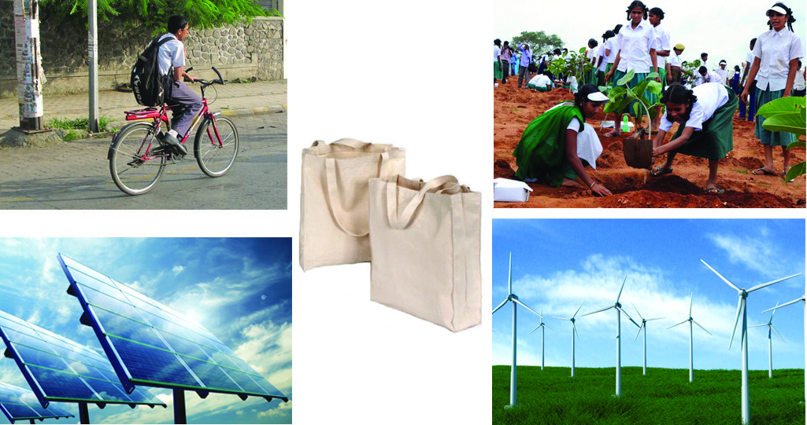


Ãm≥tU¿Uv VI
177
{]Ir-Xn-bpsS hc-Zm\w
hn`-h-kw-c-£Ww
hn`-h-߃- \oXn-]q¿hhpw {i≤m-]q¿hhpw D]-tbm-Kn-°p-Ibpw
Ahbv°v ]p\-ÿm-]n-°-s∏-Sm\p≈ kabw A\p-h-Zn-°p-Ibpw
sNøpI F∂-XmWv hn`-h-kw-c-£-W-Øns‚ ASn-ÿm\XØzw.
Hmtcm h¿jhpw GI-tZiw 3 Zi-
e£w Iyp_nIv ao‰¿ acw a\p-jy≥
D]-tbm-Kn-°p-∂-XmbmWv IW-°v.
Hmtcm sk°‚nepw GI-tZiw Hcp
^pSvt_mƒ
ssaXm-\-Øns‚
A{Xbpw hep-∏-Øn¬ a\p-jy≥
h\-߃ sh´n\in-∏n°p∂p. Cu
ÿnXn XpS¿∂m¬ 2020 BIp-tºm-
tg°pw Ct∏m-gp≈ h\-`q-an-bpsS ]Ip-Xn-am-{Xta `qan-bn¬ Ah-
ti-jn°q F∂v ]T-\-߃ sXfn-bn-°p-∂p.
\¬In-bn-cn-°p∂ Hmtcm Nn{X-Ønsebpw kμ¿`-ßfpw hn`-h-kw-c-£-
WsØ Fßs\ klm-bn-°p∂p F∂p N¿®-sN-øp-I.
Page 82

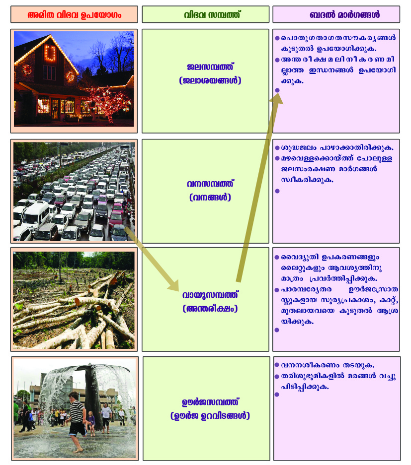


kmaq-ly-imkv{Xw
178
{]Ir-Xn-bpsS hc-Zm\w
h¿°vjo‰v
Aan-X -hn-`h D]-tbm-KsØ kqNn-∏n-°p∂ {]h¿Ø-
\-߃, AXn-eqsS timjWw kw`-hn-°p∂ hn`-h-
߃, _Z¬am¿K-߃ F∂n-ßs\ ]´nI (]´nI
12.2)bnse If-ßsf A\ptbmPyambn tbmPn-∏n-°q.
IqSp-X¬ _Z¬am¿K-߃ Iq´n-t®¿°p-a-t√m.
Pq¨ 5 temI ]cn-ÿnXnZn\w.
G{]n¬ 22 temI `ua-Zn-\w.
Cu Zn\-߃
{]Ir-Xn-°p-th≠n
]´nI 12.2
Page 83


Ãm≥tU¿Uv VI
179
{]Ir-Xn-bpsS hc-Zm\w
`qan-bn¬ {]Ir-Xn-hn-`-h-߃ ]cn-an-X-am-sW∂pw Ah kwc-£n-
°-s∏-tS-≠-Xm-sW∂pw t_m[y-am-bt√m. \ap°v Bh-iyamb hn`-
h-߃ D]-tbm-Kn-°m-\p≈ Ah-Im-i-ap-≠v. F∂m¬ hcpw-X-e-ap-
d-Iƒ°pw {]Ir-Xn-hn-`-h-߃ Bh-iy-am-sW∂v a\- n-em-°msX
hn`-h-߃ Aan-X-ambn D]-tbm-Kn-°m≥ \ap°v Ah-Im-i-an-√.
"hn`h hn\ntbmKw hnth-I-]q¿h-amIWw' F∂-Xm-bn-cn-°s´
\ΩpsS ap{Zm-hm-Iyw.
""\ap°v F√m-h-cp-tSbpw Bh-iy-ßsf
Xr]vXn-s∏-Sp-Øm-\p≈ hn`-h-ß-fp≠v.
F∂m¬ Hcm-fpsS t]mepw AXym-{K-
lsØ \nd-th-‰m-\p-≈-Xn-√-Xm-\pw.''
Km‘nPn
Aan-X-hn-`-h-Nq-jWw a\p-jy-cpsS \ne-\n¬∏n-s\-Øs∂ tNmZywsNbvXp XpS-ßn-
b-t∏mƒ {]Ir-Xnsb \njvIcpWw D]-{Z-hn-°p-∂-Xn¬ \nb-{¥Ww thW-sa-∂-
Nn-¥bp≠m-bn. Aßs\ Cu \nb-a-߃ \nehn¬ h∂p.
1. ]cn-ÿnXnkwc-£Ww C¥y≥ ]ucs‚ I¿Ø-hy-am-sW∂v DZvtLm-jn-°p∂
C¥y≥ `cWLS-\-bpsS 48 F hIp-∏pw 51 F.Pn. hIp∏pw
2. ]cn-ÿnXnkwc-£W\nbaw
3. Pe-\n-baw
4. h\-kw-c-£W\nbaw
5. hmbp-\n-baw
6. tZiob ]cn-ÿnXn {Sn_yq-W¬
hn`-h-kw-c-£-Whpw C¥y-bnse \nb-a-ß-fpw
s]cn-bm¿ \Zo-kw-c-£W-Øn\p th≠n-bp≈ P\apt∂‰w 1999 ¬ Pe AtXm-dn‰n
ÿm]n-°p-∂-Xn\p Imc-W-am-bn. CØ-c-Øn-ep≈ P\-Iobapt∂-‰-ß-fn-eq-sSbpw
k¿°m¿ Xe-Øn-ep≈ CS-s]-S-ep-Ifneq-sSbpw \nc-h[n \nb-a-߃ hn`-h-kw-c-
£-W-hp-ambn _‘-s∏´v tIc-f-Øn¬ \ne-hn¬ h∂n-´p-≠v. DZm: s\¬h-b¬ kwc-
£W\nbaw, XÆo¿ØS kwc-£W\nbaw
hn`hkwc-£Ww tIc-f-Øn¬
hnI-k\w kpÿn-cw {]IrXn kpc-£nXw
hcpw Xe-ap-dIƒ°v Ah-cpsS Bh-iy-߃ \nd-th-‰p-∂-Xn-\p≈
tijn-bn¬ Ipdhp hcmsXXs∂ C∂sØ Xe-apd Ah-cpsS
Bh-iy-߃ \nd-th-‰p∂ kao-]-\-amWv kpÿn-c-hn-I-k-\w.
Page 84

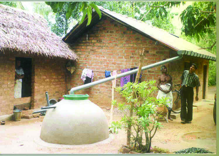

kmaq-ly-imkv{Xw
180
{]Ir-Xn-bpsS hc-Zm\w
12345678901234567890123456789012123456789012345678901234567890121234567890123456789012345678901
12345678901234567890123456789012123456789012345678901234567890121234567890123456789012345678901
12345678901234567890123456789012123456789012345678901234567890121234567890123456789012345678901
12345678901234567890123456789012123456789012345678901234567890121234567890123456789012345678901
12345678901234567890123456789012123456789012345678901234567890121234567890123456789012345678901
12345678901234567890123456789012123456789012345678901234567890121234567890123456789012345678901
12345678901234567890123456789012123456789012345678901234567890121234567890123456789012345678901
12345678901234567890123456789012123456789012345678901234567890121234567890123456789012345678901
ag-sh-≈-s°mbvØn\p≈
kwhn-[m-\-߃
Dd-∏m-°pI.
πmÃnIv Ih-dp-Iƒ°p ]Icw XpWn-k-©n-Iƒ
D]-tbm-Kn-°pI.
Rm≥ C∂p-ap-X¬....
Du¿P D]-tbmKw Ipd-bv°m≥
$ sse‰p-Ifpw ^m\p-Ifpw AXym-h-iy-Øn\v am{Xw D]-tbm-
Kn-°pw.
$ KpW-ta-∑-bp≈ sshZypX D]-I-c-W-߃ D]-tbm-Kn-°pw.
$ km[m-cW _ƒ_p-Iƒ°p ]Icw ]c-am-h[n F¬.-C.Un.
_ƒ_p-Iƒ D]-tbm-Kn-°pw.
$
$
12345678901234567890123456789012123456789012345678901234567890121234567890123456789012345678901
12345678901234567890123456789012123456789012345678901234567890121234567890123456789012345678901
12345678901234567890123456789012123456789012345678901234567890121234567890123456789012345678901
12345678901234567890123456789012123456789012345678901234567890121234567890123456789012345678901
12345678901234567890123456789012123456789012345678901234567890121234567890123456789012345678901
12345678901234567890123456789012123456789012345678901234567890121234567890123456789012345678901
12345678901234567890123456789012123456789012345678901234567890121234567890123456789012345678901
hn`-h-߃ ]p\Nw{IaWw sNøp-I, Ah-bpsS
D]-tbmKw Ipd-bv°p-I, Ah ]p\-cp]-tbm-Kn-°pI
F∂n-h-bmWv kpÿn-c-hn-I-k-\-Øn-te°v FØm-
\p≈ am¿K-߃.
kpÿn-c-hn-I-k-\-Øn-\mbn F¥p sNømw?
\ap-s°m-cp-an®v
ASp-°-f-bn¬ \n∂p≈ Pew sNSn-Iƒ \\-bv°m≥
D]-tbm-Kn-°pI.
s]mXpÿe-ß-fn¬ ac-߃ \´p]nSn-∏n-°pI
]mc-º-tcy-Xc Du¿P-t{km-X- p-I-fmb kutcm¿Pw,
Im‰n¬\n∂p≈ Du¿Pw apX-embh ]c-am-h[n D]-
tbm-K-s∏-Sp-Øp-I.
Page 85


Ãm≥tU¿Uv VI
181
{]Ir-Xn-bpsS hc-Zm\w
hn`h߃
hn`-h-kw-c-£Ww
]p\-ÿm-]n-°m≥ Ign-bp-∂h
]p\-ÿm-]n-°m≥ Ign-bm-Øh
hn`-h-tim-jWw
Cu hkvXp-°ƒ ]p\-cp-]-tbm-Ks∏SpØpw.
$ t]∏¿
$ Ip∏n
$ XpWn
$
$
]mcnÿnXnI {]iv\-ß-sf-°p-dn®v P\-ß-fn¬
Ah-t_m[w P\n∏n-°p∂ {]h¿Ø-\-ß-fn¬ G¿s∏-Spw.
AXym-h-iy-Øn\p am{Xta hn`-h-߃ D]-tbm-Kn-°p-I-bp-≈q.
Page 86

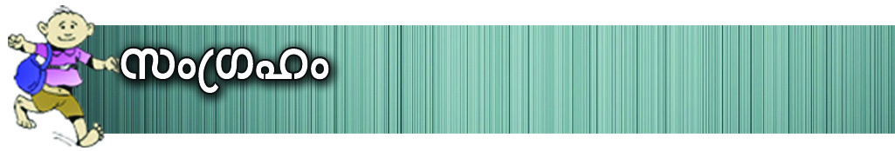

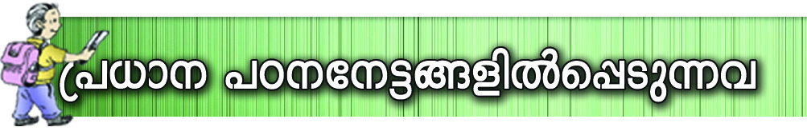
kmaq-ly-imkv{Xw
182
{]Ir-Xn-bpsS hc-Zm\w
{]Ir-Xn-bn¬\n∂p e`n-°p-∂Xpw a\p-jy\v D]-tbmK-{]-Z-hp-
amb hkvXp-°ƒ hn`-h-߃ F∂dnb-s∏-Sp-∂p.
{]IrXnhn`-h-ß-fn¬ NneXv F°m-eØpw e`y-am-bXpw NneXv
D]-tbm-K-a-\p-k-cn®v Xo¿∂pt]mIp-∂-h-bp-am-Wv. Ch bYm-{Iaw
]p\ÿm-]n-°-s∏-Sp-∂h, ]p\-ÿm-]n°s∏Sm-Øh F∂n-
ßs\ Adn-b-s∏-Sp-∂p.
A\n-b-{¥n-X-amb hn`h D]-t`m-Kwaqew kw`hn°p∂ hn`-h-
ß-fpsS Af-hnepw KpW-\n--e-hm-c-Øn-ep-ap≈ Ipd-hmWv hn`-
h-tim-jWw.
hn`-h-߃ \oXn-]q¿hhpw {i≤m-]q¿hhpw D]-tbm-Kn-°p-Ibpw
Ahbv°v ]p\ÿm-]n-°-s∏-Sm\p-≈ kabw A\p-h-Zn-°p-Ibpw
sNøpI F∂-XmWv hn`-h--kwc£Ww.
hcpw-X-e-ap-d-IfpsS Bh-iy-߃ IqSn \nd-th-dp-∂-Xn-\m-bn hn`-
h-߃ ImØpkq£n-°p∂ kao-]-\-amWv kpÿnchnI-k\w.
{]Ir-Xn-bn¬\n∂p t\cn´p e`n-°p-∂Xpw D]-tbm-K-tbm-Ky-hp-
amb hkvXp-°-fmWv {]IrXnhn`-h-߃ F∂p Xncn-®-dn™v
]´n-I-s∏-Sp-Øp-∂p.
{]IrXnhn`-h-ßsf ]p\-ÿm-]n-°-s∏-Sp-∂-h-sb∂pw ]p\x-ÿm-
]n-°-s∏-Sm-Ø-h-sb∂pw h¿Ko-I-cn®v ]´n-I-s∏-Sp-Øp-∂p.
Aim-kv{Xo-bhpw A\n-b-{¥n-X-hp-amb hn`h D]-tbmKw aqew
{]Ir-Xn-bn¬ hn`-h-k-º-Øn\v h∂p tNcm-hp∂ tZmj-߃
Is≠Øn tcJ-s∏-Sp-Øp-∂p.
hn`-h-kw-c-£-W-Øns‚ {]m[m\yw a\- n-em°n hnhn[ am¿§-
߃ \n¿tZ-in-°p∂p.
kpÿnchnI-k\Øn\mbn Iq´mbpw H‰-bv°p-ap≈ {]h¿Ø-
\-ß-fn¬ G¿s∏-Sp-∂p.
Page 87
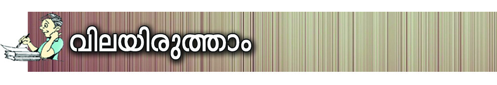

Ãm≥tU¿Uv VI
183
{]Ir-Xn-bpsS hc-Zm\w
I¿j-I-\mb cmL-h≥ ]c-º-cm-K-X-amb Irjn-co-Xn-bn-eq-sS-
bmWv IrjnsNøp-∂-Xv. ssPh-hf {]tbmKw, I∂p-Im-en-Isf
D]-tbm-Kn®v \new Dg¬ XpS-ßn-b-h. ChnsS cmL-h≥
GsX√mw Xc-Øn-ep≈ {]Ir-Xn-hn-`-h-ßsf B{i-bn-®mWv
IrjnsNøp-∂-Xv? Ah GsX-√m-sa∂v ]´n-I-s∏-Sp-Øq.
F¥mWv {]IrXnhn`-h-߃?
acw, kqcy-{]-Im-iw, a’yw, Im‰v, I∂p-Im-en-Iƒ, Pew F∂nh
Nne {]IrXnhn`-h-ß-fmWv. Chsb ssPh-hn-`-h-߃ F∂pw
AssPh hn`-h-߃ F∂pw Xcw-Xn-cn®v ]´n-I-s∏-Sp-Øq.
Xmsg X∂n-cn-°p-∂Xv c≠p Imdp-I-fpsS khn-ti-j-X-I-fm-
Wv. Ch-bpsS Hmtcm-∂n-s‚bpw khn-ti-j-X-Iƒ Is≠Øn
icn-bmb Ifß-fn¬ Fgp-Xq.
Im¿ ˛ F : kutcm¿P-Øm¬ {]h¿Øn-°p-∂p.
Im¿ ˛ _n : s]t{Smƒ sIm≠v {]h¿Øn-°p-∂p.
khn-ti-j-X-Iƒ
1. A¥-co£aen-\o-I-c-W-Øn\v Imc-W-am-Ip-∂n-√.
2. ]p\-ÿm-]n-°-s∏-SmØ hn`hw C‘-\-ambn D]-tbm-Kn-°p-∂p.
3. A¥-co-£-Ønse Im¿_¨ Utbm-Ivssk-Uns‚ Afhv
Iq´p-∂p.
4. CØcw Imdp-Iƒ [mcm-f-ambn D]-tbm-Kn-°-s∏-Sp-∂p.
5. CØcw Imdp-Iƒ hfsc ]cn-an-X-ambn am{Xta D]-tbm-Kn-°-
s∏-Sp-∂p-≈q.
6. ]p\-ÿm-]n-°-s∏-Sp∂ hn`hw C‘-\-ambn D]-tbm-Kn-°p-∂p.
-
Im¿ F
Im¿ _n
$
$
$
$
$
$
CXn¬ GXpXcw ImdpIfmWv {]IrXnkulrZ]cambXv?
\nßfpsS \nco£Ww km[qIcn°pI.
Page 88


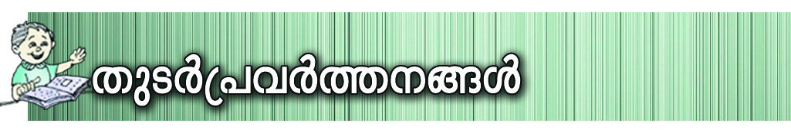
kmaq-ly-imkv{Xw
184
{]Ir-Xn-bpsS hc-Zm\w
"hn`-h-߃ \mw IS-sa-Sp-ØXv' F∂ Bibw hni-I-e\w
sNbvXv \nK-a-\-߃ FgpXp-I. hn`hkwc-£-W-Øn-\mbn
GsX-¶nepw A©p hgn-Iƒ Is≠Øn Fgp-Xp-I.
hwi-\mi`ojWn t\cn-Sp∂ arK-ß-fp-sSbpw ]£n-I-fp-sSbpw
]´nI Xbm-dm°n kmaq-ly-im-kv{X-¢m-kn¬ {]Z¿in-∏n-°q.
temI]cn-ÿnXnZn\w, `ua-Zn\w F∂nh BN-cn-°p-∂-tXm-
sSm∏w Cu Zn\-ß-fpsS {]m[m\yw kqNn-∏n-°p∂ Nm¿´p-Iƒ
Xbm-dm°n Hcp {]Z¿i\hpw kwL-Sn-∏n-°q.
kvIqƒhf-∏n¬ e`y-amb ÿe-ß-fn¬ sNSn-Ifpw acßfpw
\´p-]n-Sn-∏n-°p-Ibpw. Ah-bpsS ]cn-]m-e-\-Øn-\mbn Iq´mb
{]h¿Ø-\-ß-fn¬ G¿s∏-Sp-Ibpw sNøpI.
]q¿W-ambn
`mKn-I-ambn
Xosc-bn√
{]IrXnhn`-h-ßsf a\ n-em°n Xncn-®-dn-
bm≥ Ign-bp-∂p.
]p\-ÿm-]n-°-s∏-Sp∂
hn`-h-߃,
]p\ÿm-]n-°-s∏SmØ hn`-h-߃ F∂nh
Xcw-Xn-cn®v ]´n-I-s∏-Sp-Øm≥ km[n-°p-∂p.
hn`-h-tim-j-W-Øn\v Imc-W-amb {]h¿Ø-
\-߃ a\- n-em-°m≥ Ign-bp-∂p.
hn`-h-kw-c-£-W-Øns‚
{]m[m\yw
Is≠Øm≥ Ign-bp-∂p.
hn`hkwc-£-W-am¿K-߃ Is≠Øn ]´n-
I-s∏-Sp-Øm≥ Ign-bp-∂p.
kpÿnchnI-k-\-Øns‚ {]m[m\yw hni-
Zo-I-cn-°m≥ Ign-bp-∂p.
kzbw hne-bn-cpØmw
kzbw hne-bn-cpØmw
kzbw hne-bn-cpØmw
kzbw hne-bn-cpØmw
kzbw hne-bn-cpØmw